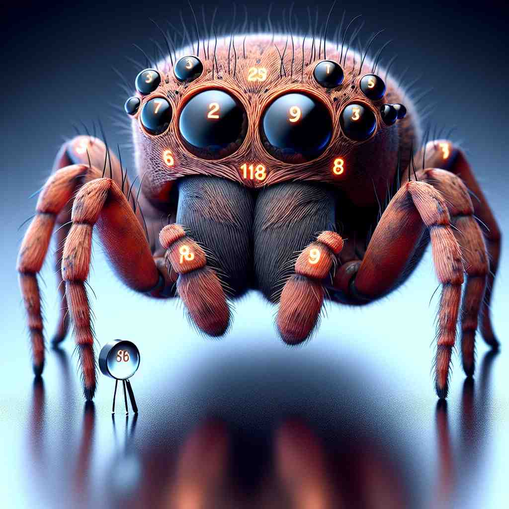
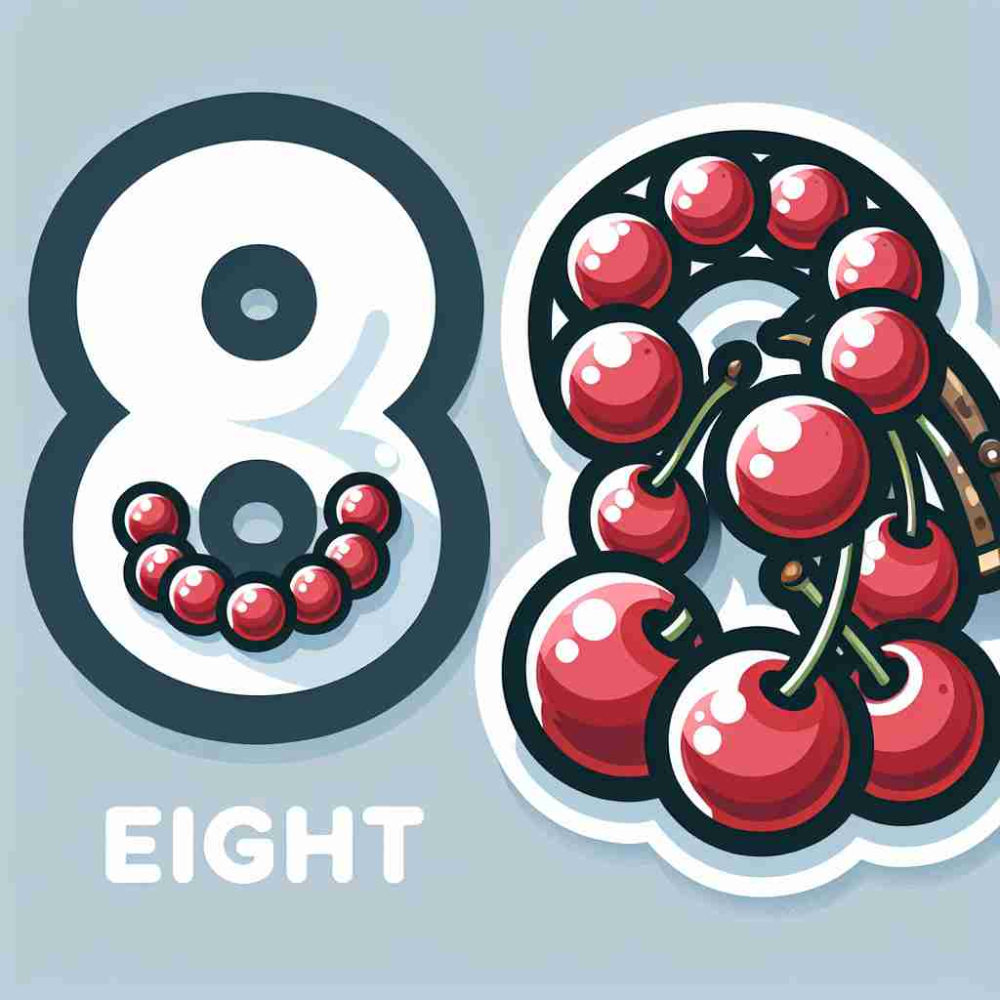

💬 The astronaut is exploring the space of the number eight.

💬 The octopus has the number eight on its body.

💬 In the picture, we see the number eight on the spider's eye.

💬 The number eight is written with cherries in the picture.
🔈 [eɪt]
🗝️ n./num. the number 8
🖼️ 在一个充满欢乐的生日派对上，蛋糕上插着八支蜡烛。孩子们兴奋地围着蛋糕，数着：'一，二，三，四，五，六，七，八！'这展示了'8'作为数字的核心含义。
🔍 记忆'eight'的关键在于其核心含义：数字8。所有衍生含义都与这个基本概念相关。想象数字8的形状，它可以代表一组8个事物，时钟上的8点，比赛中的第8名，甚至是形似8字的图形。这种联想可以帮助你更好地理解和记忆'eight'的多重用法。
💬 The astronaut is exploring the space of the number eight.
💬 The octopus has the number eight on its body.
💬 In the picture, we see the number eight on the spider's eye.
💬 The number eight is written with cherries in the picture.
🌳 来自古英语“eahta”，追溯到原始日耳曼语“akhto”，意为数字 '8'。词根部分与表示数字相关。
💡 记忆“eight”时，可以联想超市中常见的“8-Pack”商品包装，而“八”通常出现在类似的拼图或形状游戏中，通过这种日常联想，不仅能记住 '8' 这个数，还能加深对其他相关词的理解。
🗝️ n. a group or set of eight
🖼️ 在一个舞蹈排练室里，八位舞者正精心排练一段舞蹈。他们形成一个完美的圆圈，展示了'8'作为八人一组的含义。
💬 The rowing team is an eight.
❓ 由基本数字概念扩展到表示一组八个事物
🗝️ n. eight o'clock
🖼️ 在一个安静的家中，闹钟指向了八点整。伴随着铃声，一个上班族迅速起床，准备开始新的一天。这个场景展示了'八点钟'的含义。
💬 The meeting starts at eight.
❓ 数字在时间表示中的应用
🗝️ n. eighth
🖼️ 在一场校际长跑比赛中，比赛结果公布。一位选手骄傲地站在颁奖台上，拿着写有'第八名'的证书，脸上洋溢着自豪的笑容。
💬 He finished the race in eight.
❓ 表示序数概念
🗝️ n. figure resembling the number 8
🖼️ 在一个艺术教室里，学生们正在学习画数字8的形状。老师指着黑板上画的'∞'，说这就像是一个躺下的8，展示了类似8形状的含义。
💬 The ice skater performed a perfect figure eight.
❓ 从数字形状延伸到相似形状的事物